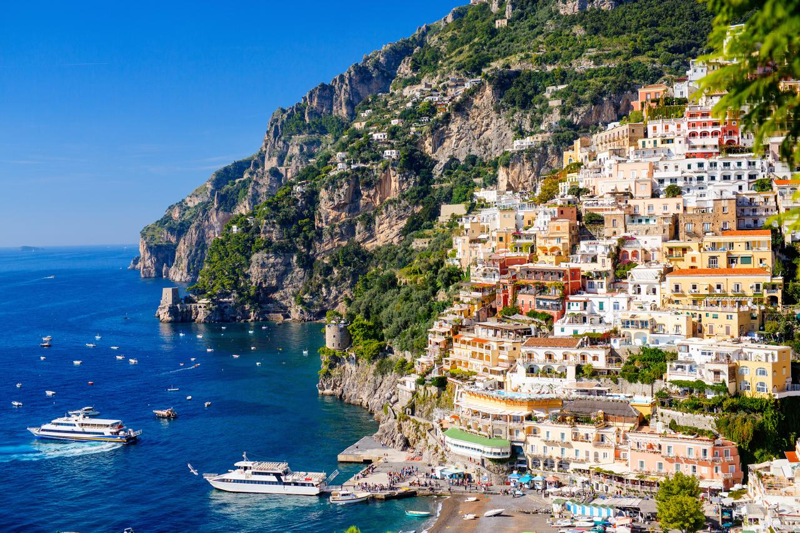
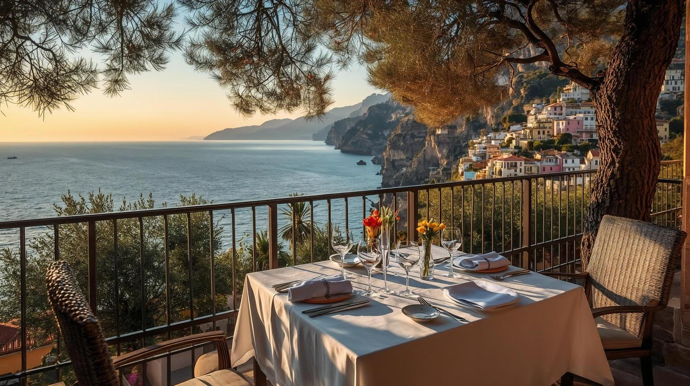
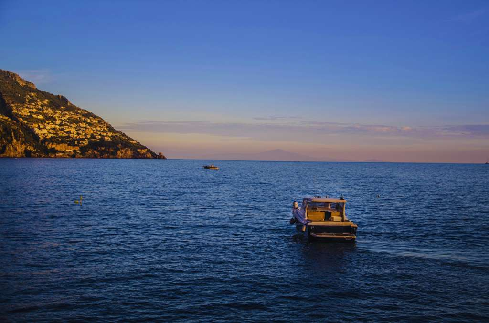
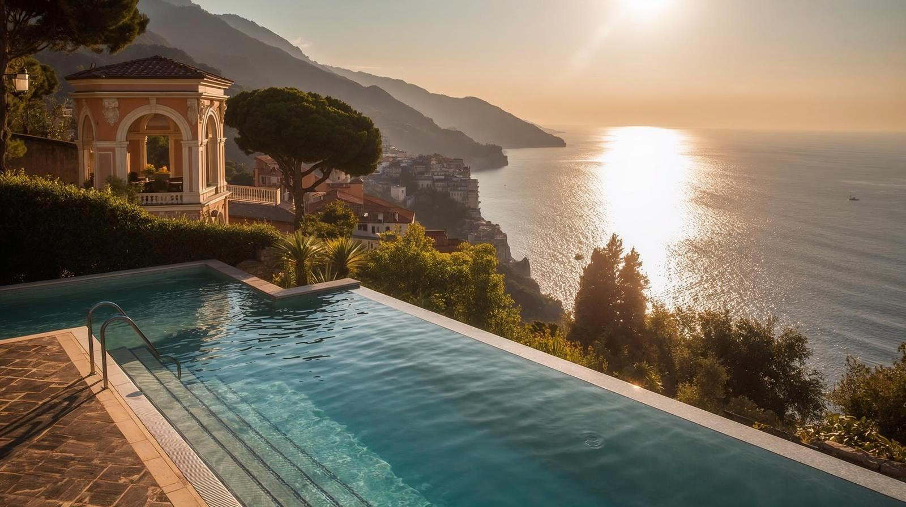
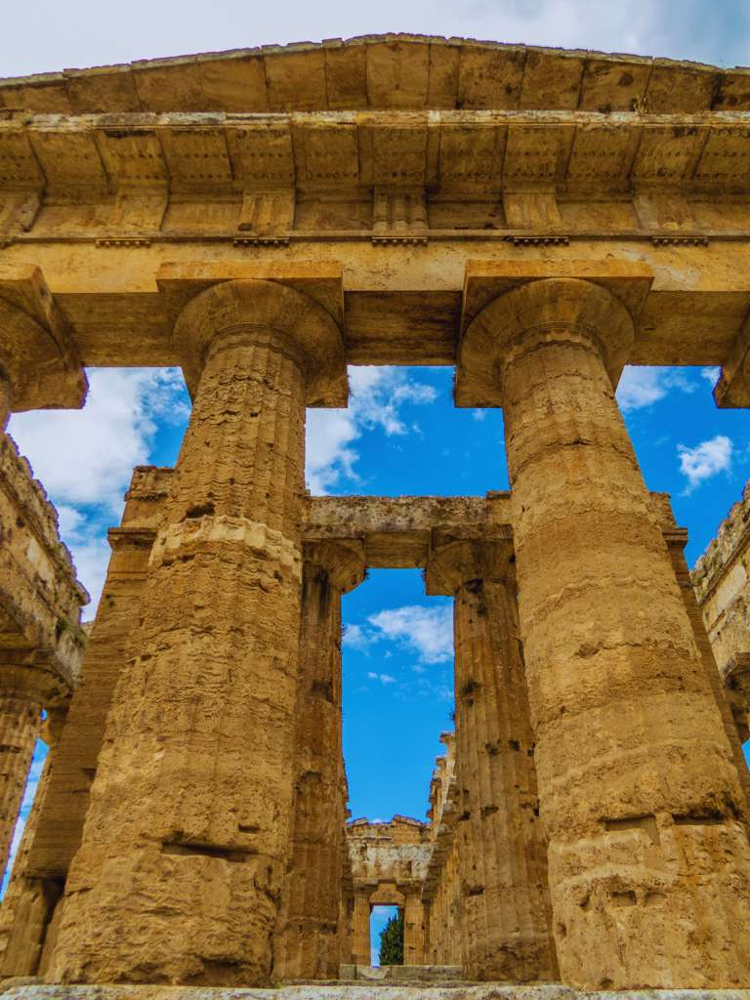
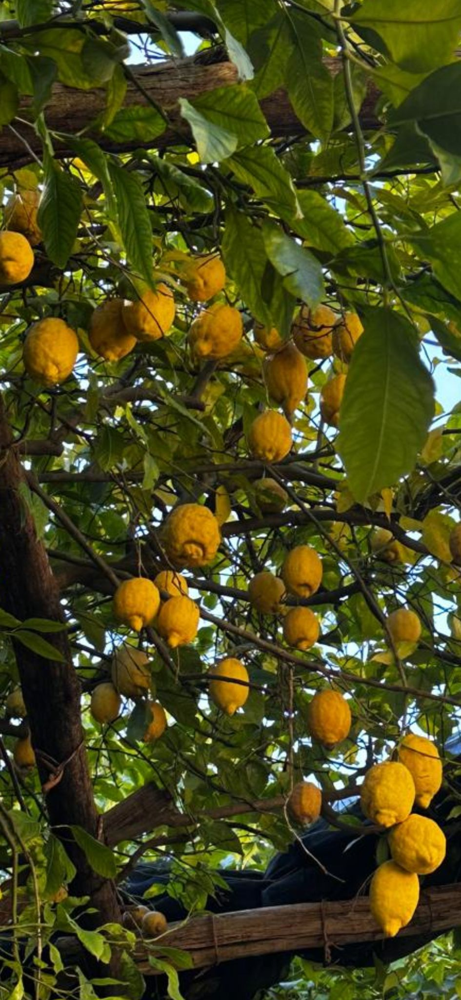

The Bespoke Experience
Inspired by You
Tailored to your passions, pace, and availability — each encounter is created around what moves you most. Whether for a single afternoon, a weekend escape, or an extended journey
The Bespoke Experience - Inspired by You
Bespoke Amalfi Coast Experience transforms your desires into a tailor-made Italian escape.
We begin with what inspires you — food, wellness, the sea, culture, luxury, or quiet discovery — and weave it into a seamless experience designed entirely around you. Whatever you wish to emphasize, we'll bring it to life — with the same artistry, warmth, and attention to detail as our Signature Journey.
How It Works
Tell Us Your Vision
We start with a Discovery Call where we learn about you: your passions, preferences, must-sees, and dream experiences.
Contact Us →We Design Your Journey
Our team crafts a custom itinerary tailored to your vision — complete with exclusive experiences, private guides, and hidden gems.
Refine & Perfect
We work together to adjust every detail until your journey feels exactly right.
Live Your Story
Arrive, relax, and experience the Coast your way — with our team ensuring every moment is seamless.
What's Possible with a Bespoke Journey?
Anything you can imagine. Here are just a few ideas:

Culinary Immersion
Private cooking classes with Michelin chefs, wine tastings in hidden cellars, farm-to-table dinners under the stars.

Sea & Adventure
Private yacht charters, sunset sailing, snorkeling in hidden coves, or a day exploring Capri by boat.

Luxury Stays
Boutique hotels, historic villas, or cliffside suites — we select accommodations that match your style.

Art & Culture
Private tours of Pompeii, ceramics workshops in Vietri, visits to local artists' studios, opera nights in historic theaters.
Adventure & Movement
Vespa tours along the coast, hiking the Path of the Gods, mountain biking in Tramonti, yoga by the sea.

Authentic Connections
Meet local producers, visit lemon groves, learn traditional crafts, dine in family homes.
These are just a few possibilities. Your Bespoke Journey is entirely yours to imagine.
Who Is the Bespoke Journey For?
Your bespoke journey is molded around the people you travel with. From intimate escapes to spirited celebrations, we choreograph every detail to match the way you love to explore.
Couples seeking romance
Celebrate an anniversary, honeymoon, or simply being together with experiences designed for two.
- Private sunset cruises and aperitivos
- Secret garden dinners with live mandolin
Families wanting flexibility
Create memories at your own pace with activities that delight every generation.
- Kid-approved adventures paired with downtime
- Private drivers and guides tuned to your rhythm
Solo travelers
Experience the Coast on your terms, with personalized guidance and meaningful connections.
- Hosts who balance private time with curated company
- Wellness rituals, tastings, and ateliers tailored to you
Groups of friends
Design the ultimate getaway together — from wine tours to beach days to culinary adventures.
- Private boat days with onboard chefs and DJs
- Hands-on culinary nights and vineyard celebrations
Let's Create Your Story
Every Bespoke Journey begins with a conversation. Tell us your vision, and we'll bring it to life.
Let the Amalfi Coast awaken your senses
The scent of lemons, the warmth of the sun, the sound of waves against ancient cliffs.
Come as a traveler. Leave as part of the coast.
Tocca Amalfi
Touch the Soul of the Coast.